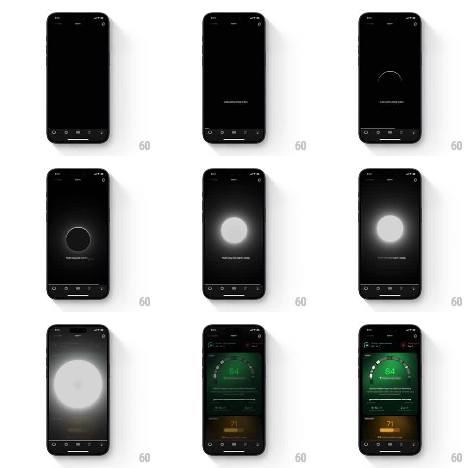

Media
Frame-by-frame

Rebuild this animation 1:1: Ultrahuman's sleep analysis reveal - a thin ring gathers on black, swells into a breathing white orb while "Analyzing last night's sleep" waits beneath, then the orb's glow expands to fill the screen and resolves into the sleep dashboard.

Rebuild this animation 1:1: Ultrahuman's sleep analysis reveal - a thin ring gathers on black, swells into a breathing white orb while "Analyzing last night's sleep" waits beneath, then the orb's glow expands to fill the screen and resolves into the sleep dashboard.
## Integration
Integration: stack-agnostic spec - springs given as stiffness/damping, timed motions as duration + curve; map every value to your framework and animation library of choice.
## Scene
Black screen, tab bar at the bottom. Center stage for the loading sequence, then the full sleep dashboard (green score ring at 84, recovery card at 71, stats rows).
## Motion spec
Pattern: loading orb -> expansion reveal, ~3s.
- A hairline ring draws closed on the black screen ("Calculating sleep index", 600ms).
- The ring fills into a soft white orb with a heavy blur halo; the orb breathes (scale 1 -> 1.08 -> 1, ~1.4s cycle) while "Analyzing last night's sleep" sits beneath.
- The orb then expands: halo grows past the screen edges (700ms, ease-in) until the screen is awash in glow.
- Within the glow, the dashboard fades and sharpens into place (500ms) - the glow recedes as the green score ring and cards become readable.
- The dashboard's own ring draws its arc once as it lands (600ms).
## Calibration
- The breathing must be slow and shallow; a fast pulse reads as an error spinner.
- The expansion and the dashboard fade overlap - glow first, content inside it, never content after black.
## Reduced motion
Skip the orb; crossfade from the loading label to the dashboard (400ms).
## Don't miss
- The orb is white/neutral even though the result is green - the glow colors only as the dashboard emerges.
- Tab bar stays visible and still the whole time; the sequence lives above it.